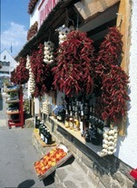

|
|
|
Tihany
- Ortschaft auf der gleichnamigen
Halbinsel
|
|
|
Die
Halbinsel Tihany - vor der künstlichen Absenkung des Plattenseepegels im Jahre
1789 immer eine Insel - ragt 5 km weit in den Balaton hinein, ist max. 3,5
km breit und trägt selbst zwei Binnenseen,
in deren Schilf
seltene Vogelarten nisten. Im Jahre 1952 wurde die
gesamte Halbinsel unter Naturschutz gestellt. |
|
| |
|
Trotz Naturschutz wird der Plattenseepegel auf Drängen von
Immobilienspekulanten, die während der winterlichen Einöde
ihre Ufergrundstücke in den See hinein erweitern und oft ohne
Genehmigung dort ihre Häusle bauen,
gelegentlich - zuletzt im Jahre 2004 - an dem zuerst von den
Römern errichteten Siel bei Siófok herabgesetzt. |
| |
 |
Im
unteren Bereich der Abteikirche wurde der fünfte, mit
päpstlichem Segen christlich gekrönte König der
Ungarn aus dem Haus der Árpáden im Jahre 1060 beerdigt.
In der Kirche und gleich darunter im
Ortszentrum befinden
sich unzählige Marktstände und Souvenirläden. Am Fuße der Abteikirche
steht das "Paprikahaus", wo
man alle
Köstlichkeiten des Landes bekommt, auch aus weit entfernten
ungarischen
Gegenden. |
 |
|
|
Von den Bolschewiken im Jahre
1919 geplündert und von deren
Nachfahren (ihre Kinder und Enkelkinder, deren Vertreter im Jahre 2014 noch
immer die überwiegende Mehrheit im ungarischen Parlament
bilden) in den Nachkriegsjahren
erneut geplündert, wurden die restlichen Kirchenschätze von den sowjettreuen Kommunisten im
Jahre
1949 verstaatlicht. Seit einigen Jahren gehören die Abteikirche und das Kloster
erneut den Benediktinermönchen.
|
|
Besuchenswerte
Sehenswürdigkeiten in
Tihany sind: |
- Die Abteikirche oben am höchsten Punkt der
Halbinsel,
- Das
Abteimuseum mit einem Lapidarium im etwas
tiefer gelegenen Benediktinerkloster,
- Die Mönchsklausen am Óvár Berg
(dt. Alter Burgberg),
- Das Freilichtmuseum
(Batthyány Lajos u. 36) zeigt Häuser aus dem 18.
Jahrhundert,
- Das Töpferhaus
bzw. Fazekasház (Pisky sétány 9) befindet sich im alten
Dorfsteil Ófalu - Bild rechts.
|
|
|
|
Oben
auf der Bergkuppe, direkt hinter der
Stiftskirche genießt man bei schönem Wetter einen
rundum Panoramablick über den gesamten Balaton.
Im
Hafen legen die Fähren in den Sommermonaten
halbstündlich ab und
erreichen Szántód am Südufer in ca. 20
Minuten. |
|
Von
den Römern „Lacus Pelso“ genannt, stammt
sowohl die
deutsche Benennung Plattensee, als auch Balaton auf Ungarisch ab.
In
der Römerzeit vor rd. 2.000 Jahren war Tihany eine Insel, erst
durch die künstliche Absenkung des Wasserspiegels ab Ende des 18.
Jahrhunderts, bisher insgesamt um rd. 3
Meter wurde Tihany zur Halbinsel. Tihany ist Teil der nördlich
gelegenen Gebirgskette.
Vor ca. 400 Millionen Jahren formten zahlreiche Geysire die
Landschaft. Die zwei Binnenseen der
Halbinsel
stehen über erkalteten Vulkankratern. Wegen ihrer besonderen
Pflanzen- und Tierwelt
steht die Halbinsel seit 1952 unter Naturschutz.
Ausgrabungen
zeigen, dass Tihany schon vor den Römern,
spätestens seit der Eisenzeit kontinuierlich bewohnt war.
Östlich und westlich von Tihany belegen Ausgrabungen die
Ansiedlung von Kelten, Römern und Awaren in dieser Gegend.
1055 wurde das
Kloster mit einer Abteikirche von König Andreas I.
erbaut. Im
unteren Bereich der heutigen Barockkirche, in einer grob
gemeißelten Krypta wurde König Andreas I. im Jahre
1060
begraben. Die
Gründungsurkunde der Abtei ist das
erste
schriftliche Zeugnis mit lateinischen Buchstaben in
ungarischer Sprache.
In der Umgebung des Klosters
siedelte sich
allmählich eine Gemeinde an. So gilt das Jahr 1055 n.Chr. als
Gründung der heutigen
Gemeinde Tihany. Seit dem 13. Jahrhundert ist die Abtei berechtigt,
Urkunden zu
beglaubigen (locus authenticus). Die Gegend um den beiden Binnenseen
herum war während der
türkischen Besatzungszeit (16.-17.
Jahrhundert) noch eine von Schilf
bedeckte Sumpflandschaft - dabei war der Wasserpegel damals
ca. 3 Meter höher als
heute.
Die Bevölkerung versteckte sich im
Schilfgürtel und wurde von den Türken nie gefunden.
Im Gegensatz zu andersartiger Literatur, wurde die zu
einer Festung ausgebaute Abteikirche auf der Bergkuppe von den
Türken weitgehend zerstört und erst
im Jahre 1752 im barocken Stil wieder aufgebaut. Dabei erhielt die
Kirche zwei
Türme. Sie sind heute ein Wahrzeichen des Balatons.
|
|
|
|
Die
Lavendelblüte und die Ernte findet ab Mitte Juni
statt und dauert lange an, selbstpflücker sind willkommen. Oben
am Berg im Abteiladen bekommt man handbemahlte Töpferware,
verschiedene Lavendel- und
Honigprodukte direkt vom Hersteller. Sie werden von den
Mönchen in den klostereigenen Trockensilos
(Bild rechts) zum Verkauf zubereitet. |
|
|
|
|
Der Lavendel blüht auch weiß und wer
weiß, eines Tages vielleicht in allen Regenbogenfarben, wie
die Rose.
Klimabedingt etwa Anfang bis
Mitte Juni dreht sich hier alles um den Lavendel. Einen mehr
oder weniger großen Korb darf man täglich selbst pflücken.
Bilder
unten: Lavendelanbau auf der Halbinsel Tihany. |
|
|
Im
Nordosten am
Óvár Berg (dt. Alter Burgberg) sind Mönchsklausen in den Basaltfels gehauen. Sie alle
entstanden
- wie die
im Jahre 1055 gestiftete Benediktinerkirche - im 11. Jahrhundert.
|
SICHLING-
bzw. GARDA FESTIVAL
November
in
Fischen,
Wettbewerb im
Fischsuppenkochen, populärwissenschaftliche
Vorträge und Unterhaltungsprogramme erwarten die Besucher.
Die Ziege bzw. Sichling, in Ungarn
neuzeitlich Garda genannt, ist eine der vielen
Fischarten, die seit eh und je im
Balaton vorkommen. Garda ist in ihrem Habitat mit dem in Salzwässern
lebenden Hering vergleichbar
- zieht ihre Kreise in großen Schwärmen im gesamten
See herum und überwintert östlich der Halbinsel Tihany dort,
wo der See mit 11 m die größte Tiefe hat und daher am wenigsten
bzw. zuletzt zufriert.
Einzigartig schmeckt Garda in einer Panade aus Mehl
und Paprika in heißem Öl gebraten. In der Fischsuppe
wird Garda zusammen mit anderen Fischen aus dem Balaton gekocht, wie Karpfen, Schill u.a.
Landesweit berühmt ist das normalerweise ganzjährig geöffnete
Fischrestaurant
in der Nähe der Hafenmole im östlich gelegenen
Nachbarort
.
|
|
|
Nützliche Links:
|
|
| |
| |
Ungarn-Tourist Team

|
| |
 |
| |
|